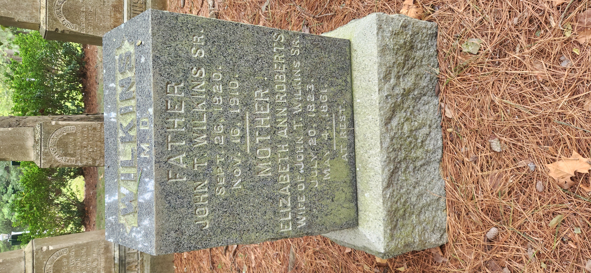

John, Elizabeth Wilkins

Wilkins MD Father John T Wilkins Sr. Sept 26 1820 Nov 16 1910 ----------- Mother Elizabeth Ann Roberts Wife of John T Wilkins Sr. July 20 1823 May 4 1861 ----------- At Rest